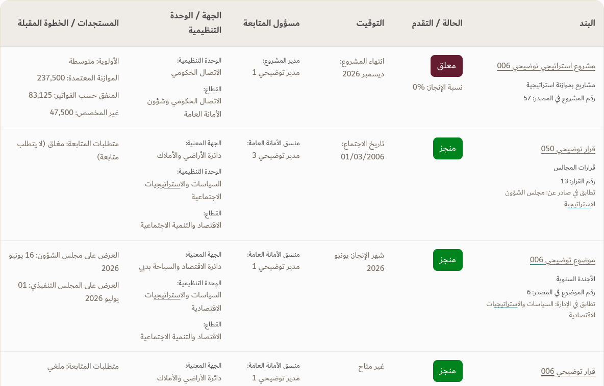

<!doctype html><html lang="en"><meta charset="utf-8"><meta name="viewport" content="width=device-width,initial-scale=1"><title>TEC search table preview</title><style>body{margin:0;background:#FCFBFB;color:#333333;font:16px/1.6 Arial,sans-serif;padding:24px}main{max-width:1280px;margin:auto}nav{display:flex;gap:16px;flex-wrap:wrap;margin-bottom:24px}a{color:#115E67}img{max-width:100%;height:auto;display:block;margin:16px 0 32px;border:1px solid #E7E0D3}h1{font-size:28px;font-weight:400}h2{font-size:22px;font-weight:400}p{color:#4F4E4E}</style><main><h1>Approved Google-like home, table findings</h1><p>Illustrative search prototype. The working app remains unchanged.</p><nav><a href="TEC-Google-Search-Table-Preview.html">Try search</a><a href="TEC-Google-Search-Table-Results.png">Full desktop results at 100%</a><a href="TEC-Google-Search-Table-Results-Mobile.png">Mobile table</a><a href="TEC-Google-Search-Table-Home.png">Approved home</a></nav><h2>Findings in a table</h2><h2>Approved search home</h2></main></html>